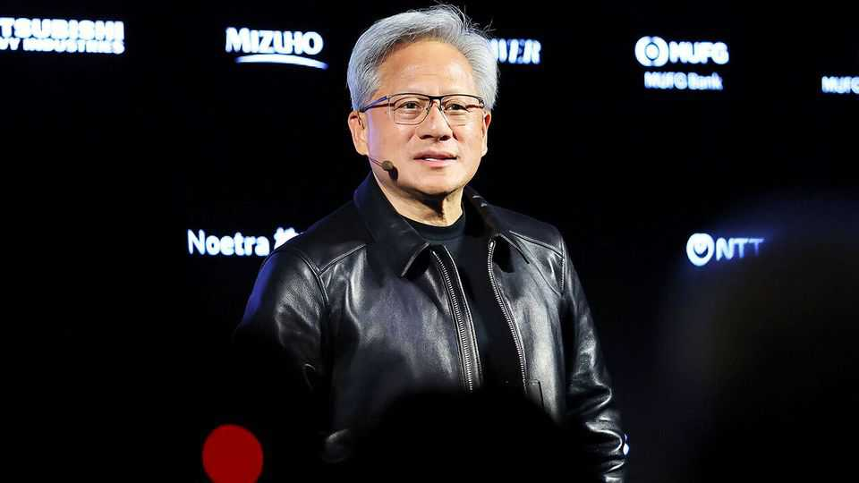

Business

Aug 13th 2026
Nvidia struck partnerships with six leading financial firms, including BlackRock, Goldman Sachs and KKR, to eventually channel $500bn to its customers by tapping into “third-party capital”. The proceeds will finance the buildout of AI infrastructure using Nvidia’s chips. The biggest cloud-computing companies, such as Alphabet, Amazon and Microsoft, are increasingly designing their own customised AI chips, which could eventually compete with Nvidia’s. As well as selling to hyperscalers, Nvidia is seeking new business from other customers, such as governments and companies trying to build their own AI infrastructure.
Intel announced a $15bn sale of new stock in part to raise capital for spending on AI. The next day it raised the share sale to $20bn. It was the company’s first public offering of new common equity since listing on the stock market in 1971.
AI fever is not limited to America. Unitree, a Chinese developer of humanoid robots, said its forthcoming stock-market debut on Shanghai’s tech-heavy STAR exchange was heavily oversubscribed. Unitree has priced its IPO at 150.8 yuan ($22) a share for a valuation of 60bn yuan, relatively high for China. The STAR 50 index has risen by 27% this year, outperforming the NASDAQ Composite.
Underlining the rapid development of AI models, Meta launched Muse Glimmer, which can run locally on laptops without relying on computer power from data centres. The model is open-weight, meaning that its parameters can be adjusted locally, enabling developers to create their own products tailored around the model.
A federal trial got under way after 29 states claimed that Meta engineered its platforms to be addictive to children. The proceedings came soon after a judge in New Mexico deemed that the company must pay an extra $567m on top of the $375m it was ordered to pay in May, when it was found liable for causing harm to children. Most of the extra money will go towards treatment services for young people. The judge’s ruling found that Meta had contributed to a mental-health crisis and he described the firm as a “public nuisance”. It will appeal against the decision.
Natarajan Chandrasekaran surprised markets by announcing that he would step down as chairman of Tata Sons, amid a long-running leadership battle. Mr Chandrasekaran has fallen out with Tata Trusts, the charitable group led by Noel Tata, a scion of the business dynasty, that controls the Indian conglomerate. Mr Chandrasekaran’s potential reappointment as chairman might have been challenged at the forthcoming annual meeting.
America’s consumer-price index rose by 3.4% in the 12 months to July, a slighter lower annual inflation rate than June’s 3.5%. Core inflation, excluding food and energy, dipped to 2.5%. Meanwhile, American employers unexpectedly shed 23,000 jobs in July and job gains registered in May and June were revised down.
Britain’s GDP grew by 1.2% in the second quarter, year on year. The Office for National Statistics suggested that the World Cup and good weather may have boosted the economy in June, as fans flocked to pubs and outside events. The economy flatlined in May.
Prices charged to vessels that transit the Panama Canal hit a new record. Fees have surged since the start of the Iran war, but the latest increases relate to lower water levels in the lake feeding the canal’s busiest locks. That has meant draft depths are lowered for ships to traverse the waterway, so they have to carry less cargo. The result is longer lines for ships, raising the bid prices as vessels try to jump the queue to use the canal.
Sea Legend, a Chinese shipping company, began the first regular service using the Northern Sea Route, which travels along the Russian coast via the Arctic. The service, running between Ningbo on China’s east coast and Felixstowe in Britain, runs in summer and early autumn, ice permitting. Dubbed the “Ice Silk Road” China hopes it can become a practical alternative to traditional shipping routes.
Zohran Mamdani, the mayor of New York, announced his support for a measure before the city council that would compel Amazon and other businesses in effect to employ delivery drivers rather than rely on contractors. The mayor’s office described the current system as “exploitative”. Amazon counters that this will drive up costs for consumers. Gig workers got some more good news in Australia, where the national workplace tribunal ordered that food and grocery delivery workers be paid at least A$31.30 ($22) an hour, A$5 above the minimum wage.